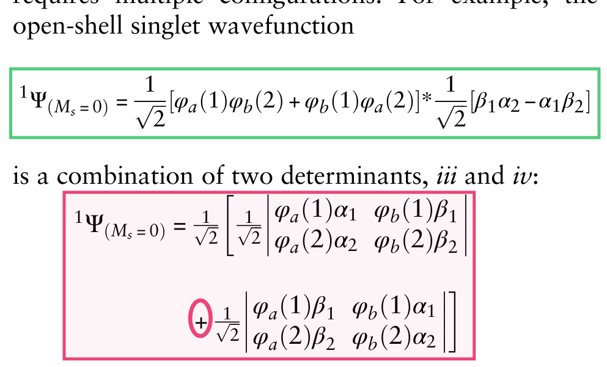

CH5103 term paper
Uncommon Molecular Electronic Configurations
Every equation of a 2015 review on open-shell singlets and non-aufbau radicals, derived step by step and checked with symbolic algebra, quantum chemistry and a proof assistant.
G. Gryn'ova, M. L. Coote, C. Corminboeuf, “Theory and practice of uncommon molecular electronic configurations”, WIREs Comput. Mol. Sci. 5, 440–459 (2015), doi:10.1002/wcms.1233 (open access).
The headline result
A sign error on page 441
The review writes the open-shell singlet of two electrons in two orbitals as a sum of the two determinants iii and iv of its Figure 1. That sum is not a singlet: it is the \(M_S=0\) component of the triplet.
with \(D_{iii}=|\varphi_a\alpha\ \varphi_b\beta|\) and \(D_{iv}=|\varphi_a\beta\ \varphi_b\alpha|\). The product form printed on the line above is correct; only the determinant expansion has the wrong sign.
Expand both determinants and collect terms, writing \(A=\varphi_a(1)\varphi_b(2)\) and \(B=\varphi_b(1)\varphi_a(2)\):

Confirmed three independent ways
- Symbolic expansion of both determinants in SymPy, then \(\hat S^2\) applied (T1).
- Numerical operator test: the printed determinants built as two-electron tensors on a grid, \(\hat S^2\) applied directly: \(\langle S^2\rangle=2\) for the printed sum, \(0\) for the difference (T1b).
- Lean 4 proof:
sum_is_triplet,diff_is_singlet,erratum_plus_is_not_singlet(T17).
Claim by claim
What holds up
The physics holds up wherever it could be tested. Besides the sign error there is one citation error, and a few statements are overstated or imprecise. The full assessment is in docs/FINDINGS.md.
verified Confirmed
- Triplet \(M_S=\pm1\) are single determinants; the open-shell singlet needs two (p. 441).
- Hund's rule comes from stronger nuclear attraction (“less screening”), not lower repulsion: exact He \(1s2s\) gives \(\Delta V_{ee}=+0.0185\), \(\Delta V_{ne}=-0.0772\ E_h\), virial ratio 2.000000.
- Static correlation grows as orbital interaction weakens (H₂ dissociation, Fig. 2).
- Kinetic exchange, disjoint NBMOs, spin alternation and Ovchinnikov's rule (rigorous via Lieb's theorem).
- The S–T gap as a HOMO-energy difference (frozen orbitals: \(2K\)); the 3d/4s identity; non-conservation of one-electron quantum numbers; ROHF orbital energies depend on canonicalisation.
error Wrong in print
- The sign of the open-shell singlet, p. 441 (above).
- Katriel & Pauncz, Adv. Quantum Chem. 10, 143 is from 1977, not 1975.
qualified Overstated or imprecise
- Same-spin correlation “an order of magnitude” smaller: true for He (ratio 0.023); about 0.3–0.4 per pair for molecular valence shells at MP2.
- “The obsolescence of” aufbau and Hund's rule (p. 455): both remain useful rules of thumb for atomic ground states.
- TriMB is called a “triplet” (p. 444); with three unpaired electrons it is a quartet, \(S=\tfrac32\).
- Fig. 7(e) text ties a triplet preference to disjoint NBMOs, against the review's own rule.
- ROHF orbital order flips only for a mixing weight \(A^*\approx1.04\), just outside the usual range \([0,1]\).
The one claim that needed new computations
Distonic radical anions, tested
The review says that in a distonic radical anion the anion's HOMO lies above the SOMO, so oxidation removes an electron from the anion and leaves a diradical, and that protonating the anion restores the normal order: a pH switch. We optimised two such radicals and their conjugate acids (UB3LYP/6-31G*) and computed the vertical oxidation to the triplet diradical and to the closed shell (6-31+G*), with two functionals.
\(\Delta=E_T-E_{\text{CS}}<0\) means oxidation gives the diradical. The orbital inversion and its removal by protonation appear with both functionals. The energetic switch appears with the range-separated CAM-B3LYP for both systems; B3LYP misses it by 0.06–0.07 eV. The claim is real but functional-sensitive.
Values: T11c (check output, CSV). The SOMO lies 2–3 levels below the α-HOMO in every anion and is the α-HOMO in every acid.
Show the numbers as a table
| radical | B3LYP (eV) | CAM-B3LYP (eV) |
|---|
18 sections, 28 pages
The derivations
Each section starts from what the review states, lists its assumptions, derives the result line by line and names the test that checks it. Read the PDF or the one-page formula sheet.
Nothing is trusted until it is checked
The test matrix
Every derived result is tied to a script or a proof. Each script prints its own PASS or FAIL. The outputs linked below come from the run that built this page, and the page is only published if every test passes. T11b is a recorded failure from development: it is what led to T11c.
| ID | what it checks | method | result | files |
|---|
Machine-checked
Lean 4 proofs
The algebraic identities behind the slides are proved in Lean 4.29.1 with Mathlib: 17 theorems, no
sorry, and #print axioms lists only propext, Classical.choice and
Quot.sound.
The example on the right is the logical core of the less-screening explanation of Hund's rule: if the triplet is lower, both states obey the virial theorem and the triplet has the larger electron repulsion, then its kinetic energy is higher and its nuclear attraction is stronger, by more than the extra repulsion.
/-- Less screening: if the triplet is lower (ΔE < 0), both states obey the virial theorem and the triplet has the larger e–e repulsion (ΔVee > 0), then ΔT > 0 and ΔVne < 2ΔE < 0. -/ theorem less_screening (dT dVne dVee dE : ℝ) (hvir : 2 * dT + (dVne + dVee) = 0) (hE : dE = dT + dVne + dVee) (hlow : dE < 0) (hee : 0 < dVee) : 0 < dT ∧ dVne < 2 * dE ∧ dVne < 0 ∧ dVee < -dVne := by refine ⟨by linarith, by linarith, by linarith, by linarith⟩
Extracted from the open-access PDF
The review's figures
All 17 figures and 5 schemes at 300 dpi, with their verbatim captions (figures.jsonl). © 2015 The Authors, CC BY-NC-ND. Select one to enlarge.
Run it yourself
Reproduce everything
make syncPython 3.12 environment from uv.lock (uv)
make verifyfast suite, a few minutes; PASS/FAIL per test, output in verification/results/
make verify-dftthe DFT tests T11/T11c (hours)
make leanLean proofs (fetches the Mathlib cache)
make derivationsthe derivations PDF
make -C presentationthe slides (LuaLaTeX); handout for one page per frame
Downloads
- Slides, one page per frame (PDF)
- Slides with step-by-step builds (PDF, for presenting)
- Derivations (PDF) · Formula sheet (PDF)
- Test matrix and how to run it
- The review itself (publisher, open access)